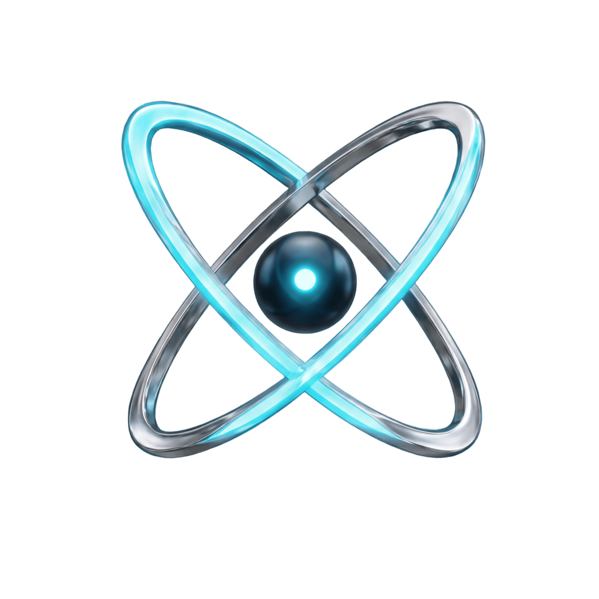

맥락·데이터를 직접 프롬프팅해 AnXer/외부 LLM에 질의

시나리오 컨텍스트를 자동 파악
'요약→상세→제언' 3단 답변 즉시 제공
솔루션마다 AI를 각각 구현해야 함 → 공수 낭비·기술 파편화
표준 기능 7+α 일원화로
타 솔루션 AI Agent 이식 공수 혁신 단축
기존 팀 문의 대응 리소스를 SpinX가 대체 — 마케터가 직접 해석·인사이트를 도출해 광고주에게 즉시 전달
결과 데이터·도메인 지식을 외부 LLM에 전송하지 않음 — 솔루션 내부에서 완결되는 안전한 AI 활용 구조
한국광고진흥재단 등 외부 대상 자사 솔루션 시연 시 실시간 AI Agent 활용 기능에 높은 호응 확보
인증 · Session · Multi LLM · Function Calling · RAG · Web Search · 가드레일 · UIUX 가이드까지 일원화
개발 구현 가이드 · 답변 3단 구조 · UI/UX 표준 정비 완료 → 타 솔루션 즉시 이식 가능 상태
LLM 연동·RAG·프롬프트 엔지니어링 등 핵심 AI 역량을 팀 내부에 축적 — 외부 의존 없이 자체 발전 가능한 기술 기반 확보
"대행사에 전달할 인사이트와 수치 변동 원인을 정리할 때 SpinX를 씁니다. 미처 생각 못한 원인까지 짚어주고, 이미 알고 있던 사유도 논리정연하게 가다듬어 주어 리포팅 생산성이 확 올라갔습니다."
"기존에는 결과값이 예상과 다르면 오류인지 추출 실수인지 판단 못한 채 해석을 중단하는 경우가 많았는데, 지금은 데이터가 어떤 로직으로 산출됐는지 단계적으로 점검할 수 있습니다. 무엇보다 단순 수치 비교를 넘어, 내 캠페인의 특성이 결과에 어떤 영향을 미쳤는지 교차 검증하면서 실제 캠페인에 바로 적용할 수 있는 인사이트를 도출할 수 있어 정말 도움이 됩니다."
"외부 AI 업체와 개별 계약하거나 인증 키를 따로 관리할 필요 없이, 사내 인증만으로 용도에 따라 모델을 골라 쓸 수 있었습니다. 단순 작업에는 빠르고 저렴한 모델을, 결과 해석 대화에는 고성능 모델을 배정해 품질과 비용을 함께 잡을 수 있었고요. 스트리밍·대화 맥락 유지·역질문 같은 챗봇 기본기를 엔진이 이미 갖추고 있어서, 저희는 'AI가 리치 예측 결과를 얼마나 잘 해석하느냐'라는 본질에만 집중할 수 있었습니다. 덕분에 기획부터 오픈까지 체감 개발 기간이 확연히 단축됐습니다."
광고 도메인 컨텍스트에 특화된 프롬프트 최적화로
'우리 도메인 최적의 AI 활용법'을 정립·제품화
멀티 LLM · RAG · 가드레일 · 펑션콜링 등 엔지니어링 요소를 조립해
'솔루션 내장형 AI 에이전트' 카테고리를 빠르게 검증
공통 엔진 구현 & 1호 연동 완주를 넘어 개발 가이드 · UI/UX 표준까지 정비해
전사 확산 기반 마련